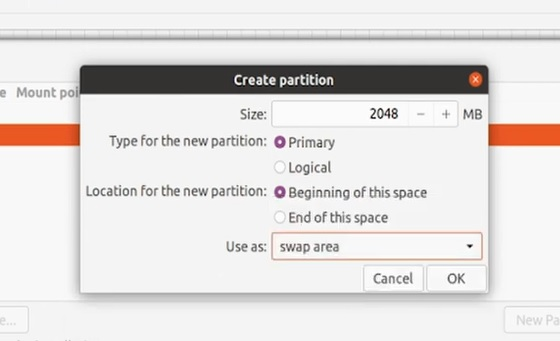
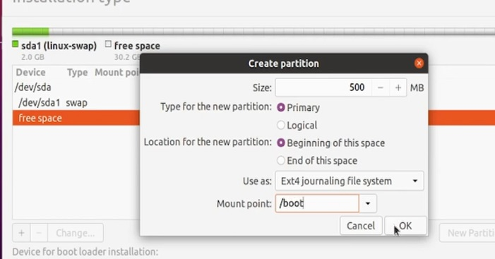
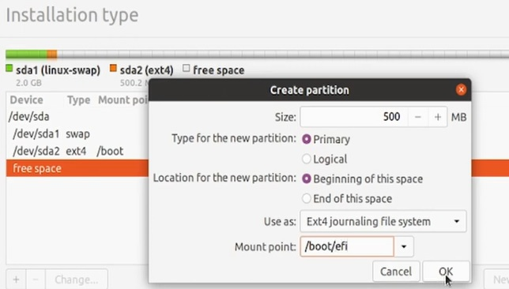
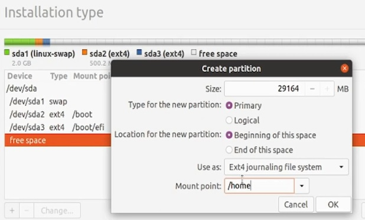

Este tipo de partição é usado para oferecer o suporte a memória virtual ao GNU/Linux em
adição a memória RAM instalada no sistema. Este tipo de partição é identificado pelo tipo 82 nos
programas de particionamento de disco para Linux.

A partição montada em /boot/ contém o kernel do sistema operacional (o que permite que o seu sistema
>inicialize o Red Hat Enterprise Linux), assim como os arquivos usados durante o processo de bootstrap.
Para a maioria dos usuários, uma partição de inicialização de 500 MB é suficiente.

A partição de sistema EFI (em inglês EFI system partition, abreviado como ESP) é uma partição
independente do sistema operacional que atua como o local de armazenamento para os gerenciadores de boot,
aplicativos e drivers EFI a serem lançados pelo firmware UEFI. É obrigatório para a inicialização do UEFI.

No Linux, o diretório /home é utilizado para armazenar dados dos usuários e suas preferências. Esse diretório
contém um subdiretório para cada conta de usuário.

Como o nome indica este é o diretório raiz do seu sistema Linux. É aqui que encontrará todos os restantes diretórios
e todos os dados que se encontram em seu sistema. Até mesmo um CD/DVD, disco externo ou qualquer outro periférico se encontra
dentro da raiz do sistema.